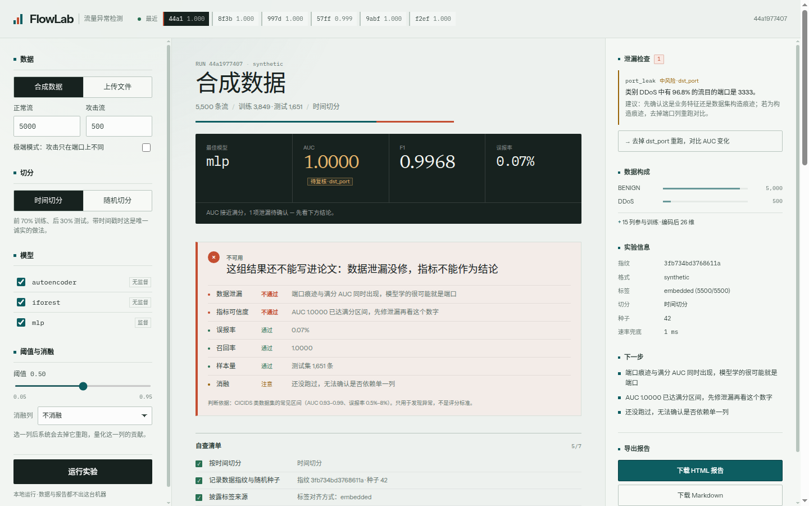
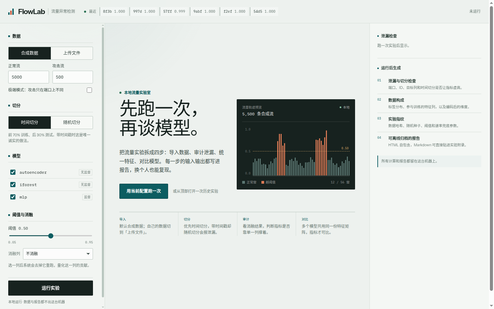

先跑一次，
再谈模型。
FlowLab 把 CSV、pcap 和 Zeek 的流量实验收进同一张工作台： 先审计泄漏，再切分训练，用同一份特征矩阵比较模型， 最后把结论、消融和可疑流写成可离线归档的报告。
- 输入
- 14 种格式
- 审计
- 4 类泄漏
- 模型
- 3 个基线
- 测试
- 101 项通过

指标好看，
不等于结论可信。
端口、标识符、目标列和时间切分都可能把答案带进特征。 FlowLab 先检查会让指标虚高的东西，再让模型开始训练。 切分、泄漏、消融、样本量，最终汇成同一份结论。
- 标签不进特征训练前统一丢弃标签与标识列。
- 预处理只在训练集拟合测试集统计量不会倒灌。
- 同数据同种子逐位一致结果、指纹和报告都能复现。
工作台不是仪表盘，
是实验台账。
所有判断都能回到数据、特征和参数，不靠一张漂亮的总览图。

- 配置
- 数据来源、时间/随机切分、模型、阈值、消融列。上传数据后，消融列从实际特征中读取。
- 证据
- AUC、F1、误报率、混淆矩阵、分数曲线、类别分布和参与训练的特征清单。
- 判断
- 结论卡、自查清单和警告徽标共用同一个 verdict，避免网页与报告互相打架。
- 下一步
- 按泄漏列重跑、做消融、查看最可疑的流，或直接导出 HTML / Markdown。
四步，把实验做成证据。
每一步都有明确输入输出，换个人也能从命令和指纹重新跑一遍。
-
01
导入
CSV、pcap、Zeek conn.log、parquet、npz、Excel 等 14 种入口。
flowlab run flows.csv -
02
审计
检查标识符、端口、目标泄漏和随机切分带来的时间泄漏。
--ablate dst_port -
03
对比
MLP、Isolation Forest、AutoEncoder 共用同一份特征矩阵和阈值。
--models mlp,iforest,autoencoder -
04
归档
报告记录数据指纹、种子、切分、特征、指标和可疑流。
--html out/report.html
# 结论
先修泄漏，再看指标
# 检查
port_leak 类别 DDoS 中 95.2% 走 3333
verdict 指标不能作为结论
# 复现
flowlab demo --report out/report.md$ git clone https://github.com/ZhuQuan181/traceledger.git
$ cd traceledger
$ uv sync --extra dev --extra api --extra data
$ uv run flowlab demo
$ uv run flowlab serve
→ http://127.0.0.1:8765